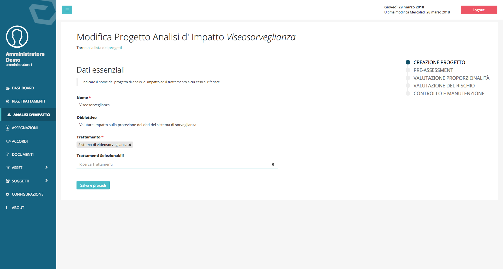
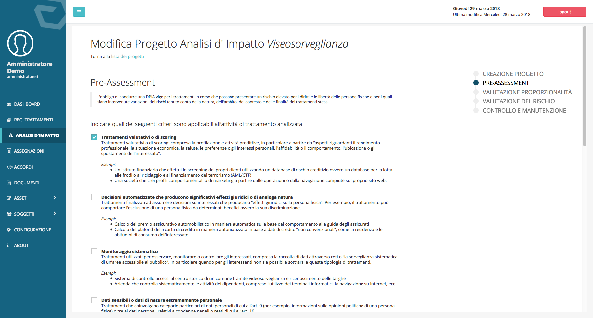
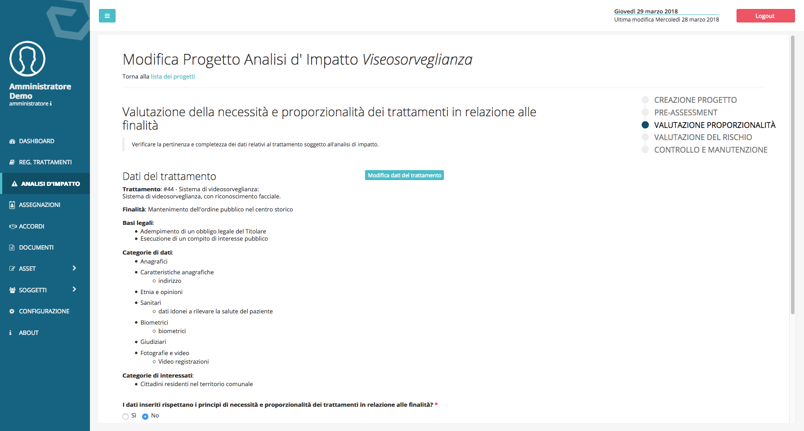
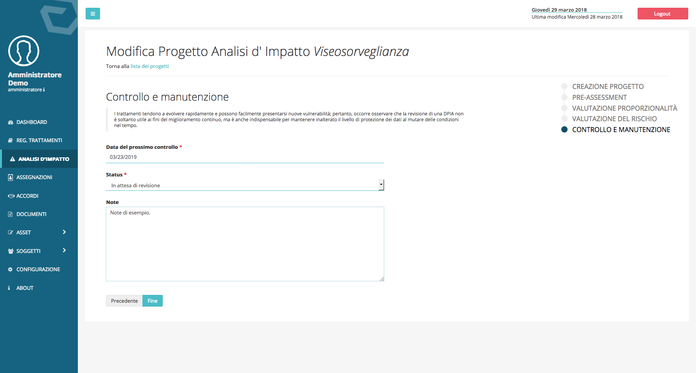

Analisi d’impatto¶
L’analisi d’impatto nel DPM è strutturata nella forma di un percorso guidato composto da cinque passaggi:
Creazione progetto¶
Il primo passaggio consiste creazione del progetto di analisi e nell’indicazione dell’attività di trattamento sulla quale si desidera effettuare l’analisi d’impatto.
{kind=link}
Pre-Assesment:¶
Il secondo passaggio è costituito da un questionario che scaturisce da quello definito nelle linee guida del Gruppo di lavoro articolo 29, “WP 248 rev.01”. Qui è opportuno apporre la spunta sulle circostanze che ricorrono nell’attività di trattamento.
{kind=link}
Valutazione proporzionalità in relazione alla finalità:¶
In questo passaggio si chiede di confermare che le categorie di dati, quelle di interessati e la base legale su cui viene effettuato il trattamento, siano proporzionali e necessarie alle finalità per la quale si trattano i dati.
{kind=link}
Gestione del rischio:¶
La gestione del rischio in DPM è strutturata in due passaggi
Inserimento e valutazione dei rischi: i rischi possono impattare su vulnerabilità strutturali, applicative o organizzative. Il primo passaggio è quello di definire il rischio e valorizzare gli indici da cui il software deriva i valori dell’impatto e della probabilità, il cui prodotto fornisce l’indice numerico che rappresenta la gravità del rischio.
Mitigazione dei rischi: è possibile definire dei controlli di sicurezza che impattano su una delle quattro variabili a partire dalle quali si definisce il rischio, valorizzando uno dei quattro campi di un controllo di sicurezza si andrà ad abbassare l’indice numerico che rappresenta il rischio finale.
Di seguito una rappresentazione grafica della logica usata per il calcolo del rischio.[1]
{kind=link}
Controllo e manutenzione:¶
Nell’ultima scheda è possibile definire lo stato di evoluzione del progetto di Analisi di Impatto:
- In corso
- In attesa di revisione
- Completato
Nel caso il progetto sia completato è opportuno definire una data per la revisione dell’analisi, nel campo “Data del prossimo controllo”.
{kind=link}
| [1] | Logiche per calcolo indici di rischio derivano dal docuimento “Data Protection Impact Assessment Template for Smart Grid and Smart Metering system” 2014, studio commissionato dalla Commissione Europea, disponibile all’indirizzo: https://ec.europa.eu/energy/en/test-phase-data-protection-impact-assessment-dpia-template-smart-grid-and-smart-metering-systems |